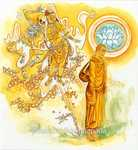
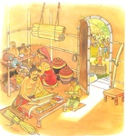

ගාථා 44–59 · කතා 12 · කතාව කියවීමට සහ සිතුවම් බැලීමට ගාථාව මත ඔබන්න.
කො ඉමං පඨවිං විචෙස්සති
යමලොකඤ්ච ඉමං සදෙවකං.
කො ධම්මපදං සුදෙසිතං
කුසලො පුප්ඵමිව පචෙස්සති
කවරෙක් ආත්මභාවය සංඛ්යාත මේ පෘථිවිය ප්රත්යක්ෂ කොට දැන ගන්නේ ද? දෙව්ලොව සහිත මේ මිනිස්ලොවත් සිවු අපායත් ප්රත්යක්ෂ කොට දැන ගන්නේ ද? කවරෙක් දක්ෂ මල්කරුවකු මල් නෙලන්නා සේ සත්තිස් බෝපැකි දහම් ප්රත්යක්ෂ කරන්නේ ද?
සෙඛො පඨවිං විචෙස්සති
යමලොකඤ්ච ඉමං සදෙවකං
සෙඛො ධම්මපදං සුදෙසිතං
කුසලො පුප්ඵමිව පචෙස්සති.
සත්වැදෑරුම් ශෛක්ෂ තෙම මේ පෘථිවිය (මේ අත්බව) ප්රත්යක්ෂ කරන්නේ ය. දෙව්ලොව සහිත මේ මිනිස්ලොව හා අපායලෝකය ප්රත්යක්ෂ කරන්නේ ය. ශෛක්ෂ තෙම දක්ෂ මල්කරුවකු මල් නෙලන්නාක් මෙන් සත්තිස් බොපැකිදහම් පසක් කරන්නේ ය.
ඵෙණූපමං කායමිමං විදිත්වා
මරීචිධම්මං අභිසම්බුධානො.
ඡෙත්වාන මාරස්ස පපුප්ඵකානි
අදස්සනං මච්චුරාජස්ස ගච්ඡෙ.
මහණ තෙම මේ කය පෙණ පිඬක් වැනි කොට දැන, මේ කය මිරිඟුවක් බඳු යැ යි ද දැන ගන්නේ, මාරයාගේ ප්රපුෂ්පකයන් (ත්රෛභූමක වෘත්තය) ආර්ය්ය මාර්ගයෙන් සිඳ මෘත්යුමාරයට අවිෂය වූ අමා මහනිවනට පැමිණෙන්නේ ය.

පුප්ඵානි හෙව පචිනන්තං බ්යාසත්තමනසං නරං
සුත්තං ගාමං මහොඝො’ව මච්චු ආදාය ගච්ඡති.
මල් නෙලන්නකු මෙන් පස්කම් මල් සොයන, විවිධ කාමගුණයන්හි ඇලුණු සිතැති සත්ත්වයා, නිදන ගම්වැසියන් මුහුද කරා ගෙන යන ගැඹුරු මහ වතුරක් මෙන්, මෘත්යුමාර තෙම අපාය සංඛ්යාත මුහුදට ගෙන යයි.
අතිත්තං යෙව කාමෙසු අන්තකො කුරුතෙ වසං.
මල් නෙලන්නකු මෙන් පස් කම් ගුණ නැමැති මල් සොයන, විවිධ කාමගුණයන්හි ඇලුනු සිතැති, කාමයන්හි සෑහීමට නො පැමිණියා වූ ම සත්ත්වයා මර තෙම සිය වශයට පමුණුවයි.
යථාපි භමරො පුප්ඵං වණ්ණගන්ධං අහෙඨයං
පළෙති රසමාදාය එවං ගාමෙ මුනී චරෙ.
යම් සේ බමරෙක් මල ද පැහැය ද ගඳ ද නො නසමින් මල්රස පමණක් ගෙන නැගී යේ ද, එ පරිද්දෙන් ම මුනි තෙම ගමෙහි හැසිරෙන්නේ ය.
න පරෙසං විලොමානි න පරෙසං කතාකතං
අත්තනො’ව අවෙක්ඛෙය්ය කතානි අකතානි ච.
මෙරමාගේ පරොස් බස් මෙනෙහි නො කරන්නේ ය (නො කට යුතු). මෙරමා කළ නො කළ දුසිරි සුසිරි නො බලන්නේ ය. තමා කළ දුසිරි ද නො කළ සුසිරි ද බලන්නේ ය (බැලිය යුතු).

යථාපි රුචිරං පුප්ඵං වණ්ණවන්තං අගන්ධකං
එවං සුභාසිතා වාචා අඵලා හොති අකුබ්බතො.
සිත්කලු වූ, මනා පැහැසටහන් ඇති, සුවඳ නැති මල් යම්සේ ද, එසේ ම මොනොවට දෙසන ලද ත්රිපිටක බුද්ධවචනය නො කරන්නහුට (ඇසීම ඉගැනීම දැරීම පිළිපැදීම නො කරන්නහුට) නිෂ්ඵල වේ.
යථාපි රුචිරං පුප්ඵං වණ්ණවන්තං සගන්ධකං
එවං සුභාසිතා වාචා සඵලා හොති පකුබ්බතො.
සිත්කලු වූ මනා පැහැති සුවඳැති මල යම්සේ ද, එසේ ම මනා කොට දෙසන ලද ත්රිපිටක බුද්ධවචනය එය කරන්නහුට සඵල වේ.
යථාපි පුප්ඵරාසිම්හා කයිරා මාලාගුණෙ බහූ
එවං ජාතෙන මච්චෙන කත්තබ්බං කුසලං බහුං.
දක්ෂ මාලාකාරයෙක් මල් රැසෙකින් යම්සේ බොහෝ මල්දම් කරන්නේ ද, එසේ ම උපන් සත්ත්වයා විසින් බොහෝ කුසල් කටයුතු.
න පුප්ඵගන්ධො පටිවාතමෙති න චන්දනං තගරමල්ලිකා වා
සතඤ්ච ගන්ධො පටිවාතමෙති සබ්බා දිසා සප්පුරිසො පවාති.
මල්සුවඳ උඩු සුළඟට නොයෙයි. සඳුන් තුවරලා සීනිද්ද බෝලිද්ද සුවඳ ද උඩු සුළඟට නො යෙයි. බුද්ධාදි සත්පුරුෂයන්ගේ සිල් ආදි ගුණසුවඳ උඩු සුළඟට යෙයි. සත්පුරුෂයා ගුණසුවඳින් සියලු දිගුන් පැතිරැ හමයි.
චන්දනං තගරං වාපි උප්පලං අථ වස්සිකී
එතෙසං ගන්ධජාතානං සීලගන්ධො අනුත්තරො.
සඳුන් තුවරලා මානෙල් දෑසමන් යන මෙකී සුවඳ දෑ අතුරෙහි බුද්ධාදීන්ගේ සිල් සුවඳ ම උතුම් ය.
අප්පමත්තො අයං ගන්ධො යායං තගරචන්දනී
යො ච සීලවතං ගන්ධො වාති දෙවෙසු උත්තමො.
තුවරලා සඳුන් පිළිබඳ යම් සුවඳෙක් වේ ද, ඒ මේ සුවඳ ස්වල්පමාත්ර එකෙකි. සිල්වතුන්ගේ යම් උතුම් ගුණසුවඳෙක් වේ ද, එය දෙවියන් මිනිසුන් අතුරෙහි ද හමයි.
තෙසං සම්පන්නසීලානං අප්පමාදවිහාරිනං
සම්මදඤ්ඤා විමුත්තානං මාරො මග්ගං න වින්දති.
පිරිපුන් සිල් ඇති, සිහියෙන් යුතු විසුම් ඇති, මනා කොට සිවු සස් දැන සියලු කෙලෙසුන්ගෙන් මිදුනු ඔවුන් ගිය මඟ මාර තෙම නොදනී.
යථා සඞ්කාරධානස්මිං උජ්ඣිතස්මිං මහාපථෙ
පදුමං තත්ථ ජායෙථ සුචිගන්ධං මනොරමං.
මහමඟැ බහා ලන ලද කසළ ගොඩෙක සුවඳැති සිත්කලු පියුමෙක් යම්සේ හටගැනේ ද,
එවං සඞ්කාරභූතෙසු අන්ධභූතෙ පුථුජ්ජනෙ
අතිරොචති පඤ්ඤාය සම්මාසම්බුද්ධසාවකො.
එසේ ම කසළගොඩක් බඳු වූ නුවණ නැති පුහුදුන් ලෝවැස්සා කෙරෙහි උපන්, සම්යක්සම්බුද්ධශ්රාවක (රහත්) තෙම ප්රඥායෙන් සෙස්සන් ඉක්ම බබලයි.